Estratègies per escoltar un remolí
Totes les llavors de dins l'armari
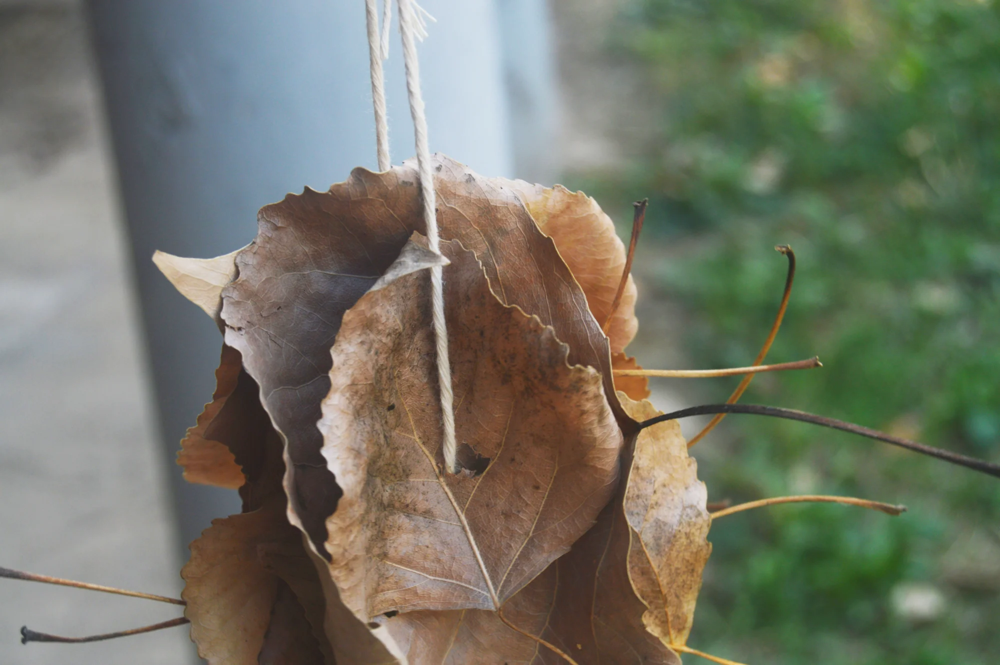
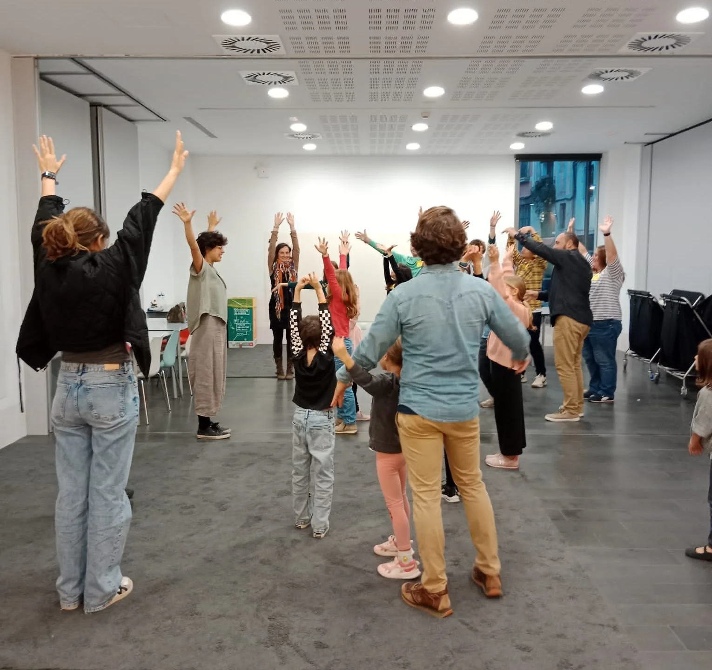
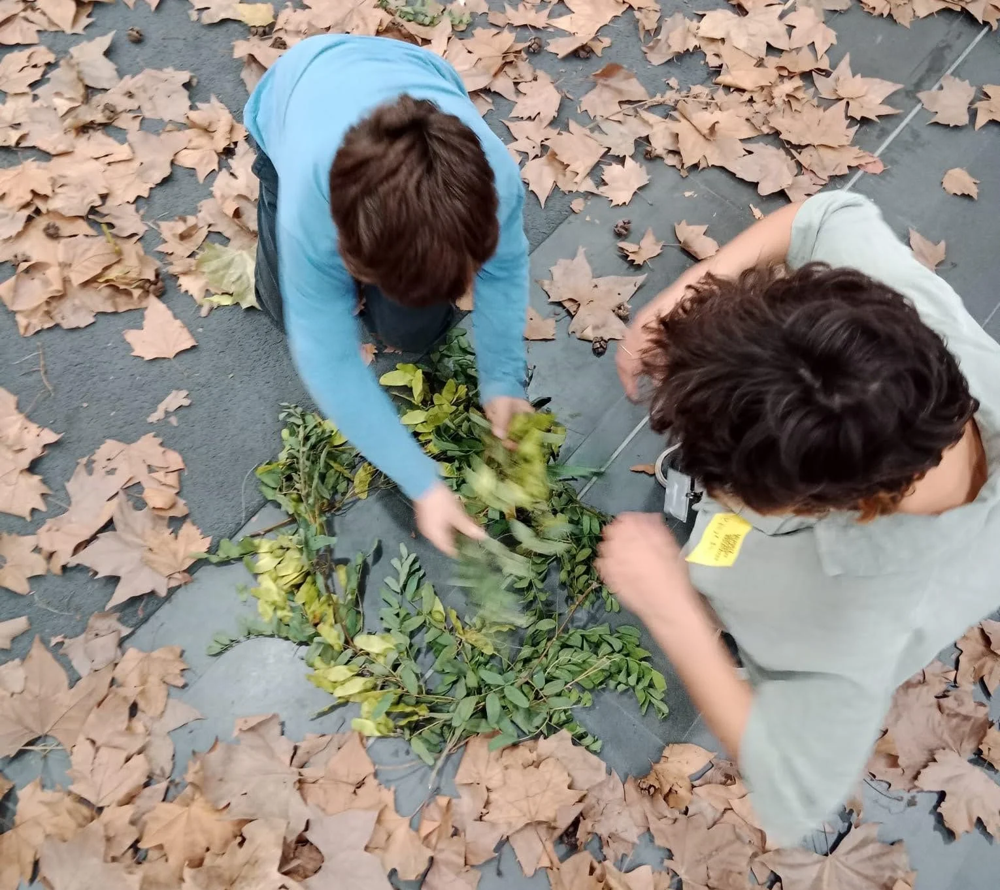
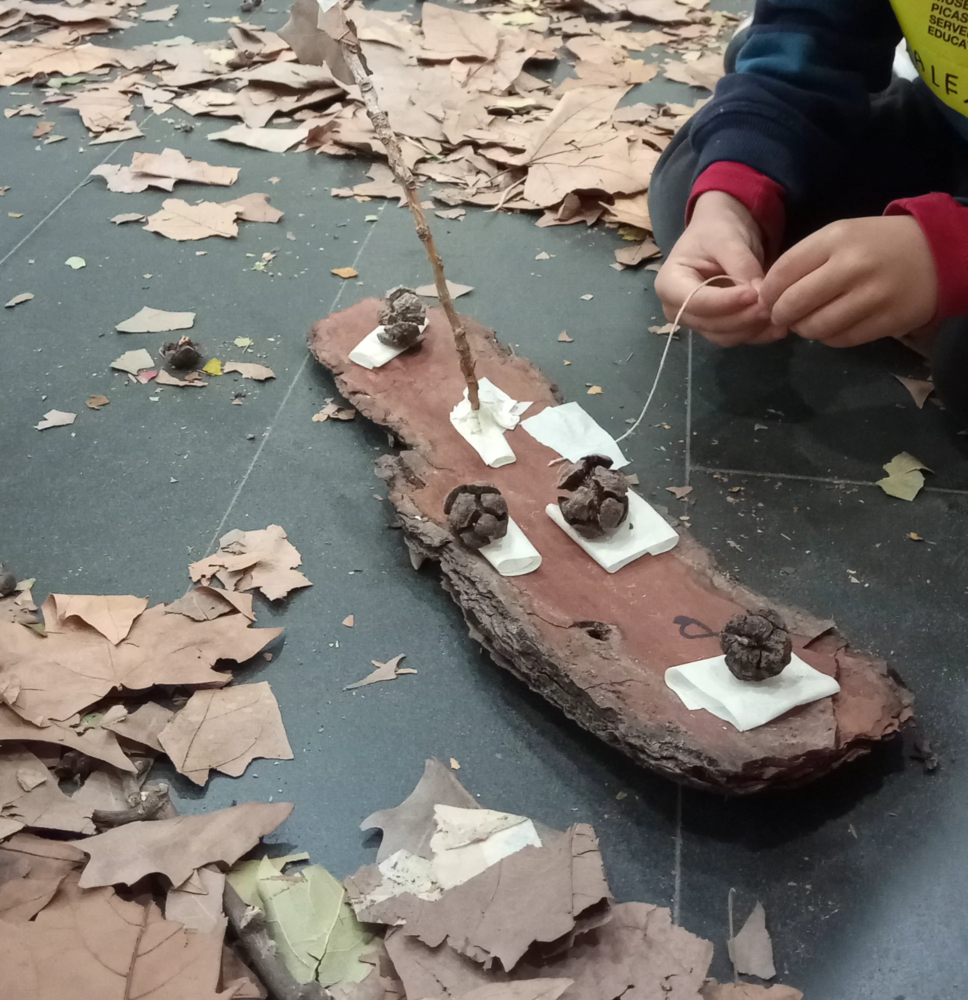
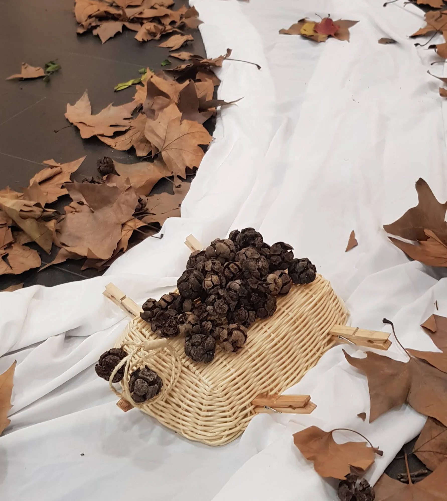
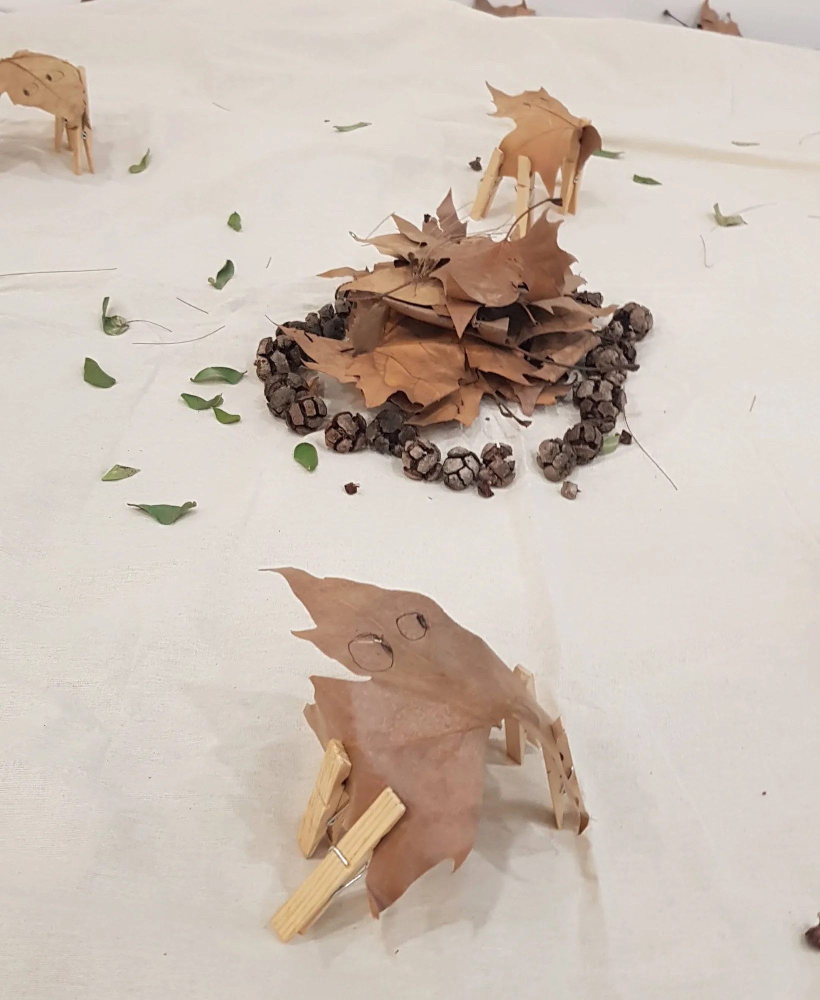
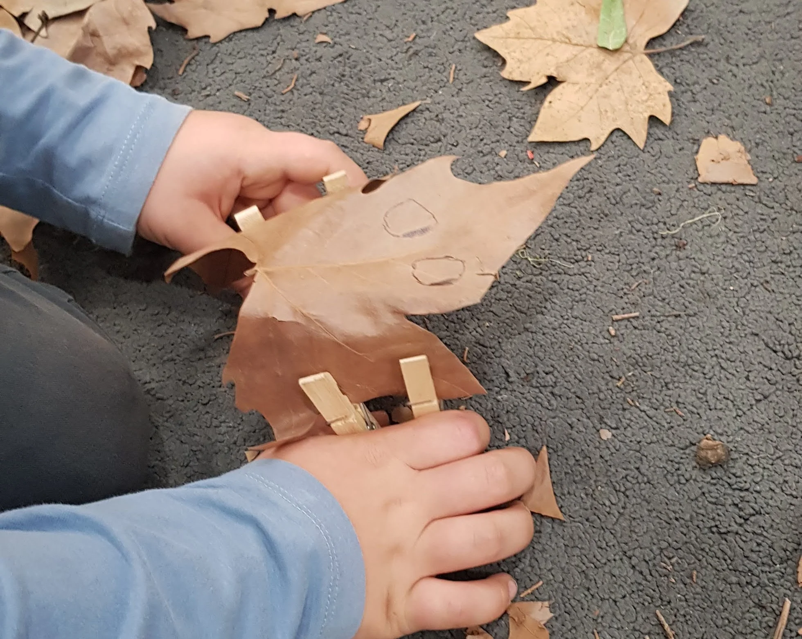
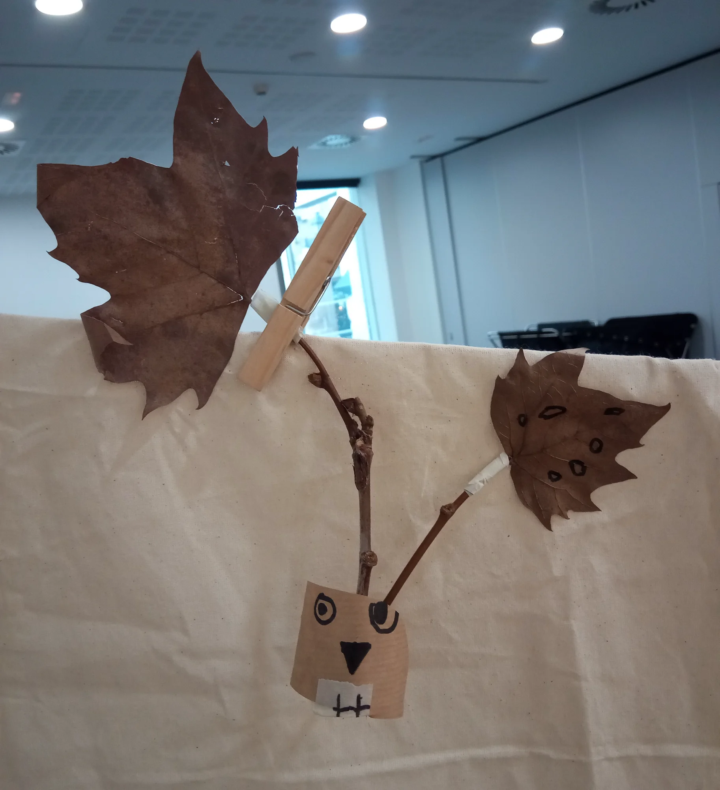
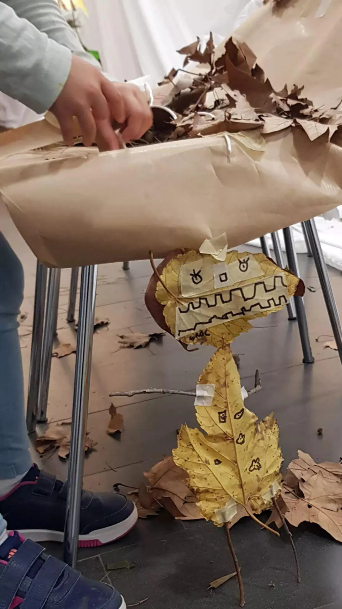
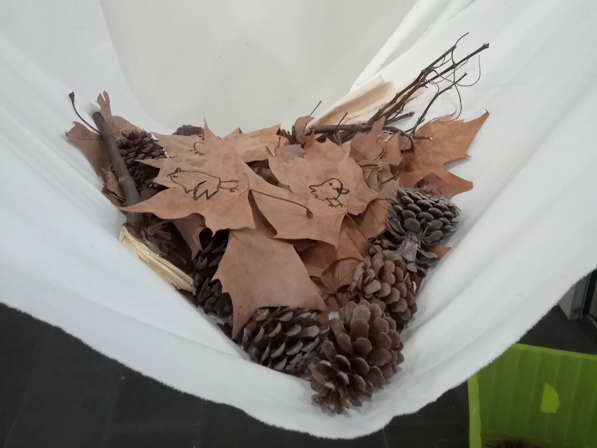
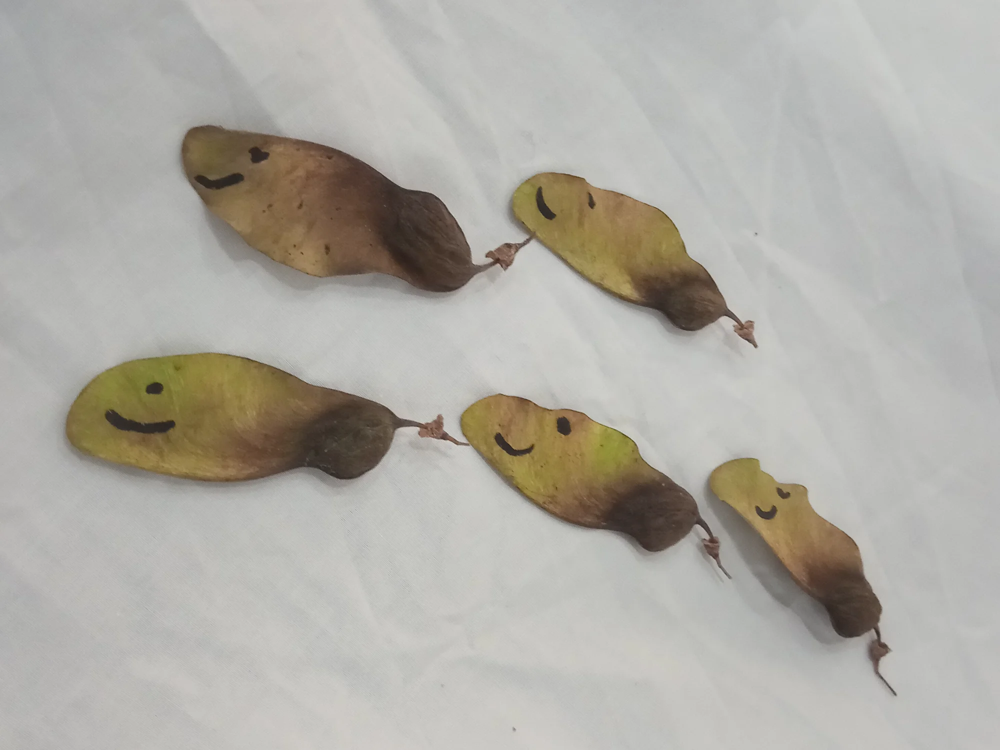
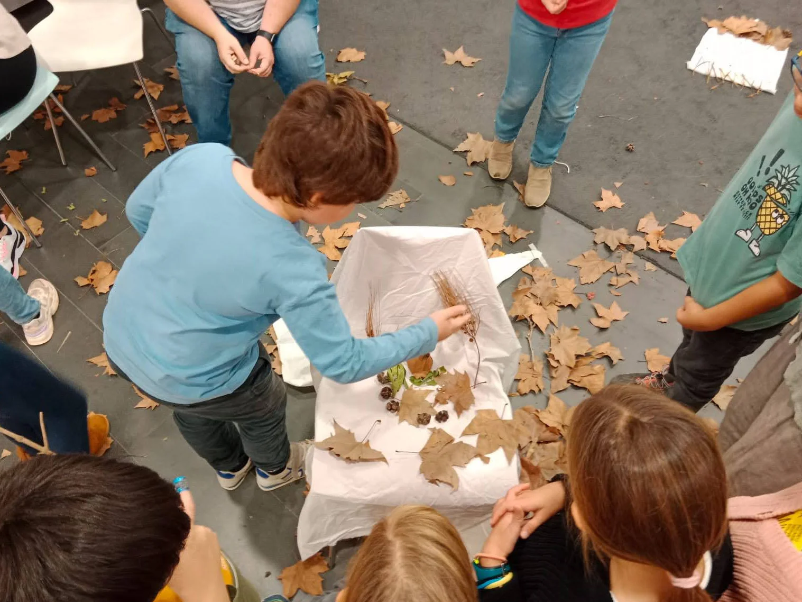
Hola hola hola.
Si afegeixes més paràgrafs, continuaran sortint en aquesta columna.
Hello hello helllo.
Per exemple, una traducció, fitxa tècnica o segon text.